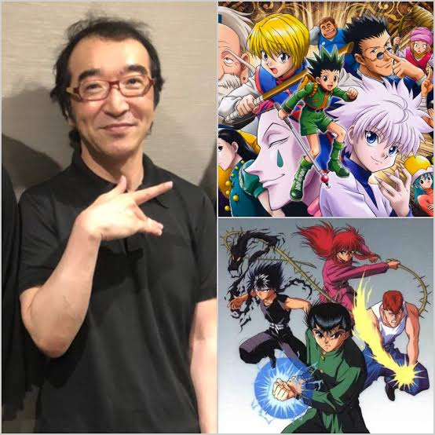
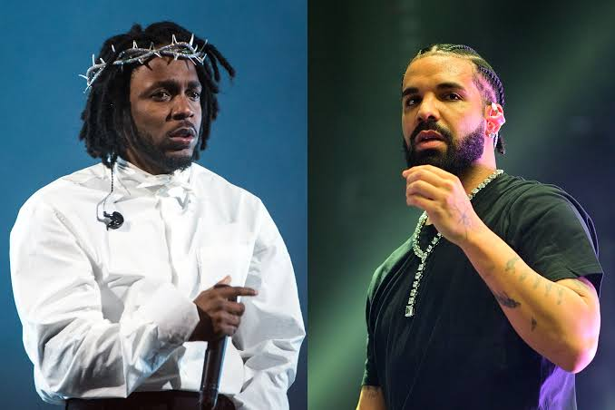

Why Yoshihiro Togashi is your favorite Mangaka's favorite Mangaka
October 3, 2026 by Mark Sterling Jr.

Ask almost any working manga artist who they look up to, and sooner or later Yoshihiro Togashi's name comes up. He's the creator of Yu Yu Hakusho, Level E, and Hunter x Hunter, and across all three he has shown a rare ability to take a familiar genre and quietly rewrite its rules.
His biggest strength is structure. Togashi treats battles as puzzles, where information, strategy, and clever use of limited abilities matter more than raw power. The Nen system in Hunter x Hunter is the clearest example: a set of rules so well thought out that readers can predict, debate, and theorize about fights the way they would about a chess match.
He also isn't afraid to subvert expectations. Heroes lose, villains get depth, and arcs go in directions nobody saw coming. That unpredictability, along with his loose, expressive art and sharp sense of pacing, is a big part of why fellow artists admire him. Even with long hiatuses, his work keeps drawing new readers in, and keeps inspiring the people who make manga for a living.
The Great Rap Beef of 2024, 2 Years Later
September 29, 2026 by Mark Sterling Jr.

Two years later, the 2024 feud between Kendrick Lamar and Drake still feels like one of the defining moments of modern hip-hop. What started as long-simmering tension turned into a rapid-fire exchange of diss tracks that dominated timelines, group chats, and barbershop debates for weeks.
The beef worked because it brought back something the genre had been missing: stakes. Every release felt like a response that demanded a counter, and fans weren't just listening, they were dissecting lyrics line by line, picking sides, and arguing over who landed the harder blows. It was a reminder that rap battles can still capture the entire culture's attention at once.
Looking back, the biggest takeaway is how far the impact reached. "Not Like Us" became a cultural moment well beyond the feud itself, showing up at parties, on charts, and on the biggest stages in music. Whatever side you were on, it's hard to deny the beef changed how people talk about lyricism, rivalry, and legacy in hip-hop. Two years on, the debate hasn't really ended, and that's probably the clearest sign of how big it was.